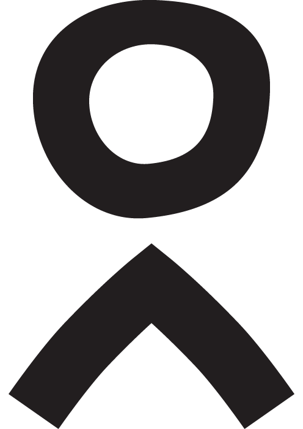
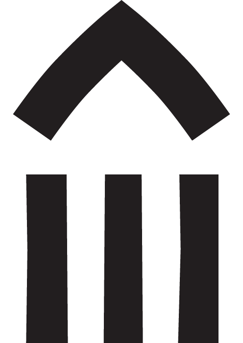

Who
Adanu + You
Together, Adanu, donors and volunteers inspire and empower communities to own and lead critical development projects that benefit people young and old across Ghanaian villages.
Adanu donors and volunteers empower communities, working together to build schools.
What
Community-Led Projects
Adanu partners with communities to foster a spirit of collaboration and ownership. This creates authentic community development and true sustainability.
Every Adanu project is run jointly with local community leaders. This creates ownership, authentic community development and true sustainability.